Introduction à l'Automatique
Document original (PDF professeur) protégé par mot de passe sur le site source — voir la section Sources ci-dessous pour le mot de passe d'accès au site aroux-sii.fr.
Compétences attendues :
- Identifier la structure d'un système asservi.
- Modéliser le signal d'entrée.
- Déterminer les performances d'un système asservi.
- Proposer une démarche permettant d'évaluer les performances des systèmes asservis.
1. Présentation des systèmes automatisés
1.1. Systèmes automatisés
1.1.1. Définition
L'automatique est la discipline scientifique traitant, d'une part, de la caractérisation des systèmes automatisés et, d'autre part, du choix, de la conception et de la réalisation du système de commande.
1.1.2. Buts et motivations
Les systèmes automatisés ont pour buts :
- de réaliser des tâches impossibles pour l'homme ou dangereuses afin d'améliorer la sécurité (exploration spatiale par exemple) ;
- de réaliser des tâches pénibles ou répétitives afin d'améliorer le confort (assemblage de pièces dans l'industrie) ;
- d'améliorer la précision, la qualité et la productivité des tâches (système de découpe laser).
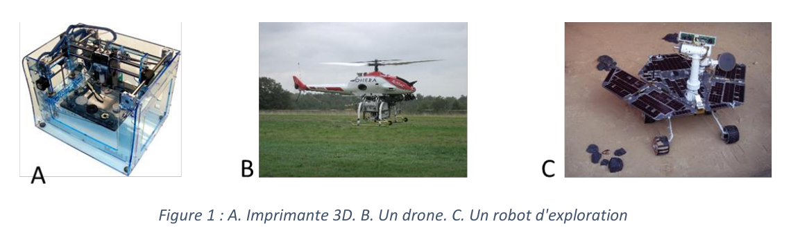
On peut également citer d'autres systèmes automatisés plus courants : système d'ouverture de portail, pilote automatique de bateau…
1.1.3. Classification selon la nature de l'information
Les systèmes automatisés illustrent la fonction Acquérir et Traiter l'information de la chaîne d'information.
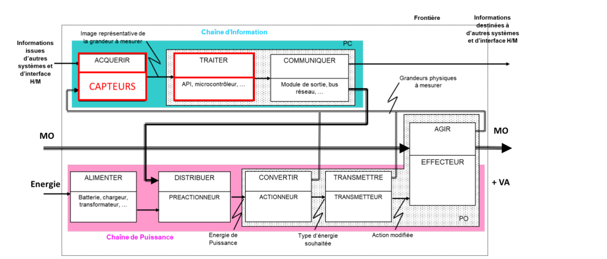
Il est ainsi possible de classer les systèmes automatisés selon la nature des informations traitées :
- les grandeurs analogiques : leur mesure donne des valeurs réelles de manière continue dans un intervalle. Il existe une infinité de valeurs pour une grandeur analogique. Elles sont généralement associées à des unités (ex : 25,2°C) ;
- les grandeurs numériques : elles sont restreintes à ne prendre qu'un nombre fini de valeurs. Par exemple, les ordinateurs ne traitent qu'une suite de nombres binaires ;
- enfin, une dernière classe est formée par les systèmes logiques, qui utilisent des informations logiques (0 ou 1). On en distingue deux types :
- systèmes logiques combinatoires : chaque état des données d'entrée correspond à une seule sortie, les effets disparaissant en même temps que la cause ;
- systèmes logiques séquentiels : la sortie dépend des entrées ET des évolutions précédentes du système ; une même entrée peut donc correspondre à plusieurs sorties.
Les systèmes séquentiels et combinatoires traitent des informations discrètes ; les systèmes continus traitent des informations continues.
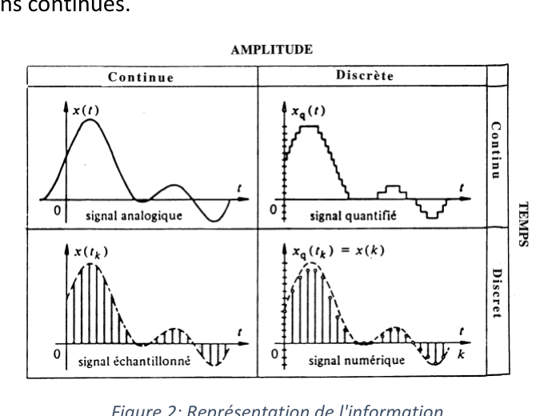
1.1.4. Différents types de systèmes
Il est possible de classer les systèmes en deux groupes :
- les systèmes instantanés : la sortie est directement déduite de l'entrée à un instant donné ;
- les systèmes dynamiques : la sortie dépend de l'état actuel de l'entrée et des états antérieurs du système.
En réalité, il n'existe que peu de systèmes instantanés, car tout effet présente une certaine inertie (ou mémoire). L'appellation « système instantané » relève donc souvent de l'approximation. C'est la raison pour laquelle le contrôle des systèmes n'est pas toujours évident ; en effet, la consigne correspondant à une sortie donnée à un instant t n'est pas unique, elle dépend de l'état du système.
1.2. Système asservi
1.2.1. Définition
1.2.2. Structure
Les systèmes asservis possèdent une boucle de retour qui permet d'élaborer la commande du système en connaissant l'état de la sortie à l'instant t, généralement par l'intermédiaire de capteurs.
Pour élaborer cette consigne de commande, on va le plus souvent comparer la sortie à la consigne actuelle (mesurer l'écart entre les deux valeurs), puis construire une consigne adaptée à cette situation.
On parle également pour les systèmes asservis de systèmes à commande en chaîne fermée.
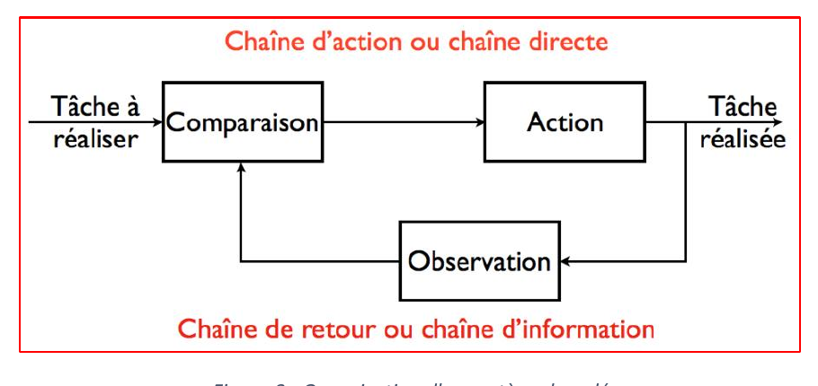
Remarque : En opposition au système asservi, un système sans boucle de retour est appelé système à commande en chaîne directe.
Exemple : Analogie entre les systèmes bouclés et l'homme :
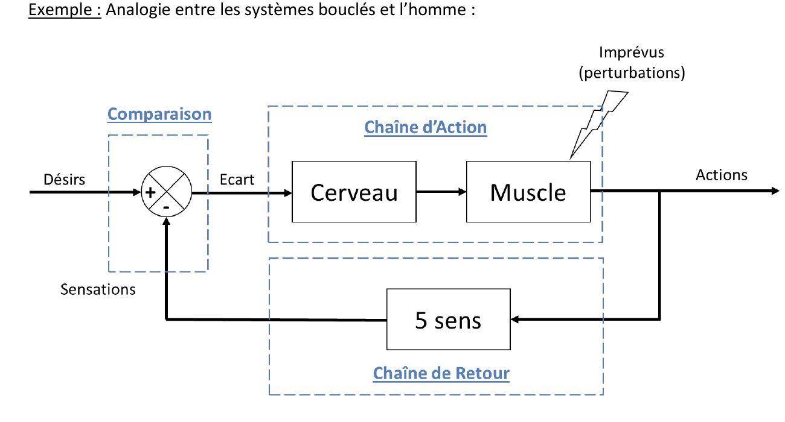
1.2.3. Classification selon la nature de la consigne
Deux grandes familles permettent de réaliser ces asservissements :
- les systèmes asservis de régulation dans lesquels la consigne d'entrée est fixe comme par exemple pour une régulation de température, de débit… Ils sont destinés à maintenir une sortie constante pour une consigne d'entrée constante.
- les systèmes asservis suiveurs ou en poursuite d'une loi de référence dans lesquels la consigne d'entrée varie en permanence comme par exemple pour une machine-outil à commande numérique, un radar… L'objectif de ce système est d'ajuster en permanence le signal de sortie au signal d'entrée.
2. Signaux d'entrée usuels
Pour étudier le comportement dynamique d'un système, la première solution consiste à mettre en équation l'ensemble des lois physiques qui régissent ce système afin d'obtenir un modèle théorique de son comportement.
2.1. Impulsion de Dirac
Ce signal est aussi appelé impulsion unité. Il est noté δ(t) et est défini par : $\forall t\ne0,\ \delta(t)=0$.
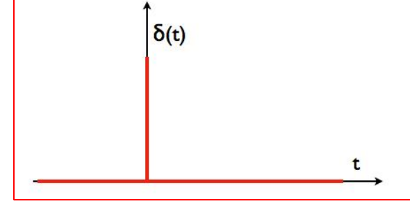
Cette fonction modélise une action s'exerçant pendant un temps très court (exemples : action d'un marteau, la frappe d'une corde de piano, etc…).
Définition : La réponse à une impulsion de Dirac est appelée réponse impulsionnelle.
2.2. Échelon unité
L'échelon unité est défini par : $\forall t<0,\ u(t)=0\ \ et\ \ \forall t\ge0,\ u(t)=1$.
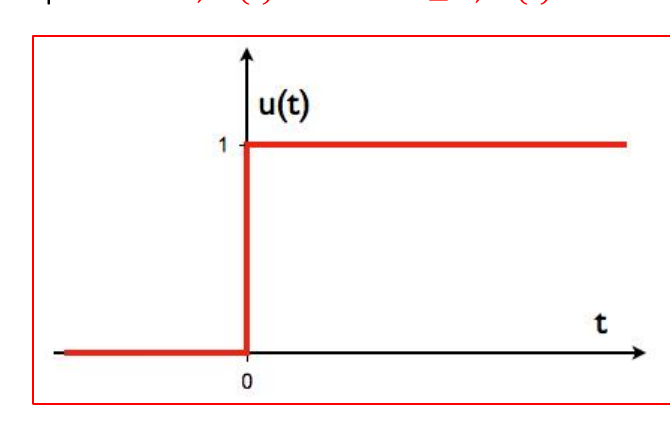
Cette fonction modélise un signal qui passe de la valeur nulle à la valeur 1 très rapidement et qui reste ensuite constant égal à 1 (exemple : appui sur un interrupteur).
Définition : La réponse à un échelon unité est appelée réponse indicielle.
2.3. Rampe de pente unitaire
La rampe de pente unitaire est définie par : $\forall t<0,\ r(t)=0\ \ et\ \ \forall t\ge0,\ r(t)=t$.
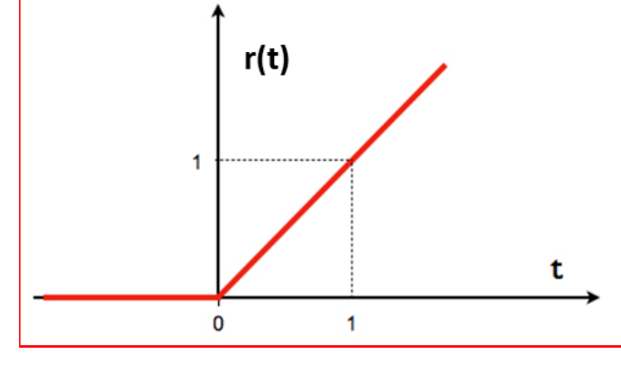
2.4. Fonction sinusoïdale
La fonction sinusoïdale peut être définie par :
$$\forall t\in\mathbb{R},\ f(t)=u(t).\sin(\omega t)\ \text{où}\ u(t)\ \text{est la fonction échelon.}$$
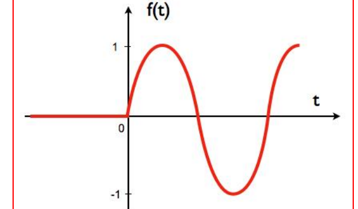
Remarques importantes :
- Pour les temps t négatifs, tous les signaux seront considérés à valeur nulle.
- Tout signal nul pour un temps négatif peut s'écrire comme la somme de signaux élémentaires en utilisant la fonction échelon.
2.5. Signaux complexes
Tout signal peut s'écrire comme la somme de signaux élémentaires en utilisant la fonction échelon et des fonctions retardées. On est alors en mesure de modéliser tout type d'entrée.
La fonction retard est une fonction échelon, dont le passage de 0 à 1 ne s'effectue qu'à un temps $t_1$. On note cette fonction $u(t-t_1)$.
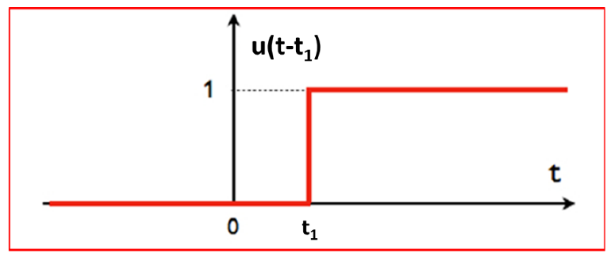
Exemple : Pour une succession de rampes avec des pentes différentes, on a donc :
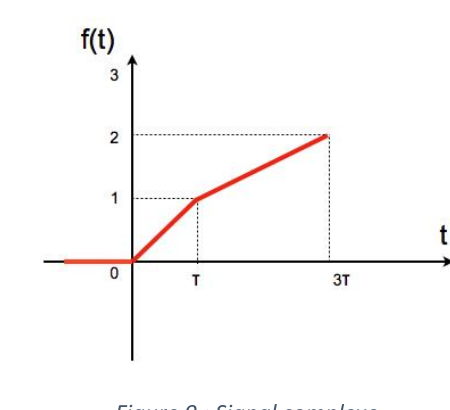
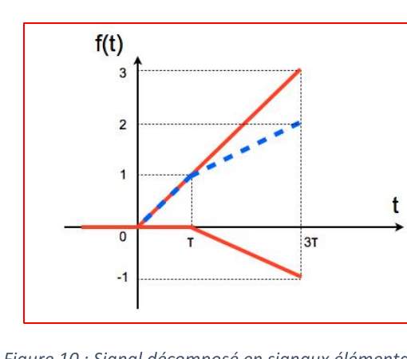
On peut donc construire deux rampes de pentes successives comme signal d'entrée en superposant une rampe classique avec une autre rampe dont l'origine est décalée (avec une fonction retard).
3. Critères de performance d'un système asservi
La réponse donnée par le système aux différentes sollicitations doit donner satisfaction par rapport aux critères du cahier des charges. Il est donc nécessaire de définir des critères qui permettront d'évaluer l'efficacité de la réponse d'un système par rapport aux données d'entrées. Pour un système asservi, on utilise 4 critères :
- Rapidité
- Précision
- Stabilité
- Amortissement
3.1. Rapidité d'un système
Dans la plupart des cas, la valeur finale est atteinte de manière asymptotique voire oscillante, on retient alors comme principal critère d'évaluation de la rapidité d'un système le temps de réponse à n%.
Dans la pratique, c'est le temps de réponse à 5%, noté $t_{5\%}$, qui est le plus souvent utilisé. Il correspond au temps mis par le système pour se stabiliser à la valeur du régime permanent (quand le temps tend vers l'infini) à ±5% près ; c'est-à-dire lorsque la sortie s(t) entre dans la bande à ±5%.
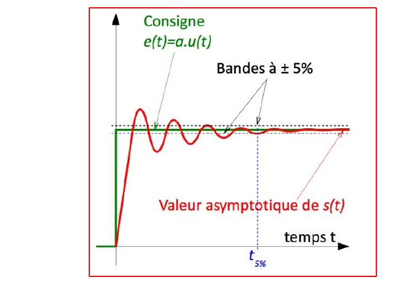
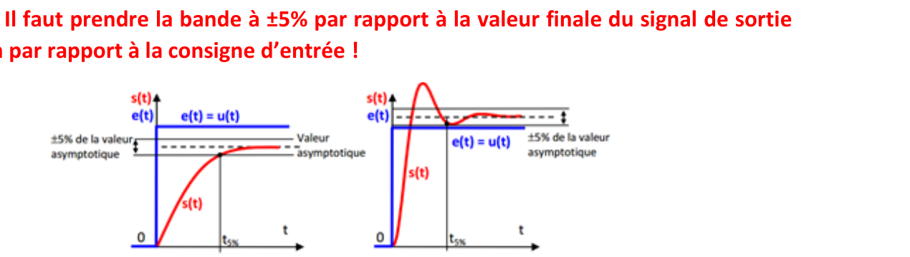
3.2. Précision d'un système
L'écart éventuel s'exprime dans la même unité que la grandeur de sortie. On distingue deux types de précision :
- Précision statique
- Précision dynamique
3.2.1. Ecart statique $\varepsilon_s$
Le système est en mode régulation (entrée fixe). On définit alors l'écart statique $\varepsilon_s$ comme l'écart entre la consigne fixe $E_0$ et la réponse s(t) en régime permanent.
$$\varepsilon_s=\lim_{t\to+\infty}\big(e(t)-s(t)\big)=\lim_{t\to+\infty}\big(E_0.u(t)-s(t)\big)$$
Un système régulateur est précis si l'écart statique est nul.
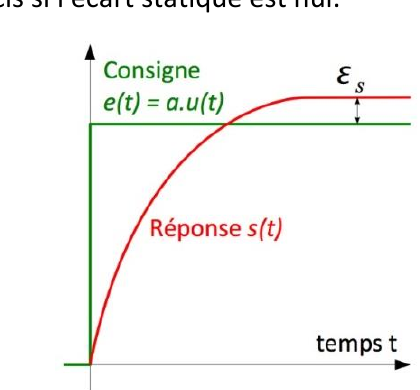
3.2.2. Ecart dynamique $\varepsilon_t$
L'écart dynamique, aussi appelé écart (erreur) de trainage ou écart (erreur) de poursuite, il représente la différence entre la consigne variable et la réponse en régime permanent.
$$\varepsilon_t=\lim_{t\to+\infty}\big(e(t)-s(t)\big)$$
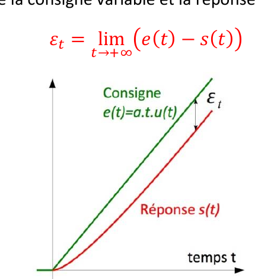
3.3. Stabilité d'un système
Exemples de systèmes stables :
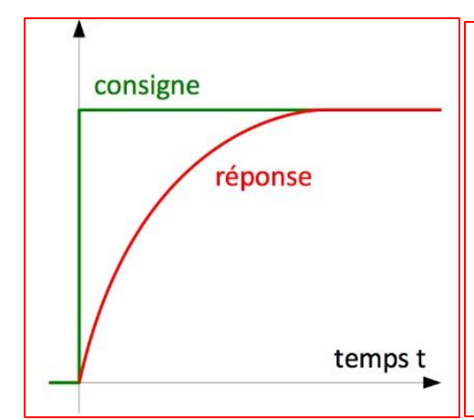
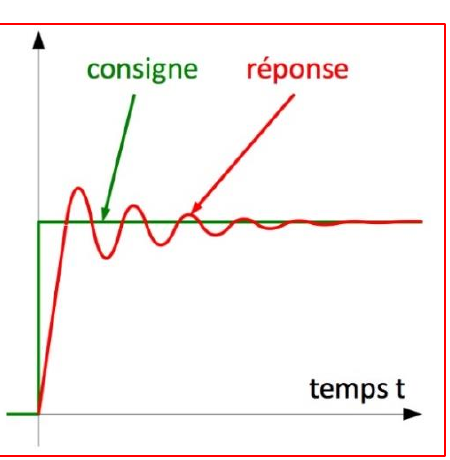
Remarque : Le bouclage peut déstabiliser un système.
Exemples de systèmes instables :
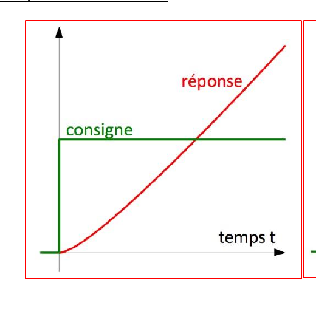
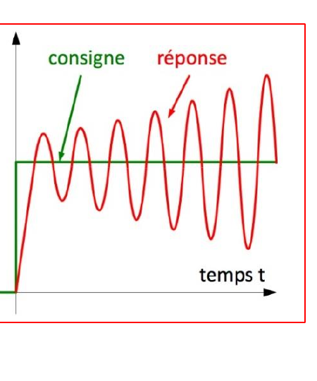
3.4. Amortissement d'un système
L'amortissement est caractérisé par le rapport entre les amplitudes successives des oscillations de la sortie. Plus ces oscillations s'atténuent rapidement, plus le système est amorti.
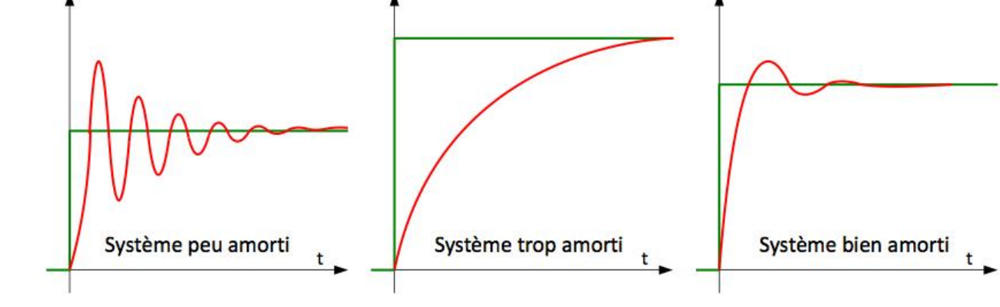
Pour caractériser la qualité de l'amortissement on peut retenir deux critères :
- le taux de dépassement (en pourcentage) qui caractérise l'amplitude maximale des oscillations ;
$$D_{1\%}=\left|\frac{s(t_1)-s_\infty}{s_\infty}\right|$$
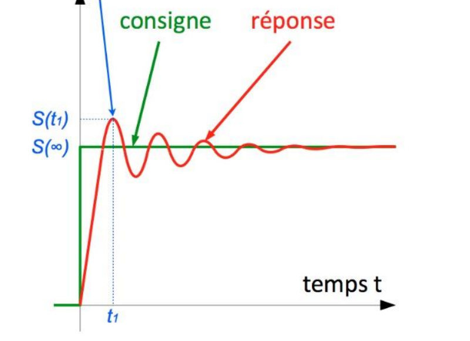
- le temps de réponse à 5% qui correspond au temps de stabilisation du système.
Il est à noter que pour certaines applications (l'usinage par exemple), un comportement oscillant n'est pas autorisé et tout dépassement est inacceptable.
3.5. Bilan sur les critères de performance
L'asservissement idéal d'un système implique une bonne stabilité et une bonne précision ; le régime transitoire doit ainsi être rapide et bien amorti (le système fait vite et bien ce qui lui est demandé). Ces critères de performances ne sont pas toujours compatibles.
Par exemple, en mécanique, un système de faible inertie réagira rapidement à une consigne de positionnement. En revanche, du fait de cette faible inertie, il risque d'être peu amorti, voire instable, à la moindre perturbation.
N.B. Inertie : Résistance qu'un corps oppose à la variation de son mouvement, et qui résulte de sa masse.
Quiz de fin de chapitre
Sources
- Cours « Introduction à l'Automatique », A. Roux, Lycée Gustave Eiffel (Bordeaux), PCSI/PSI — SII : aroux-sii.fr (site protégé par mot de passe — mot de passe d'accès :
psi*2627). - Document original (PDF) : 13-2026-09-19_SI_Cours_Automatique-Introduction.pdf.
- Critères de performance (rapidité, précision, stabilité BIBO, amortissement) : tout manuel de référence de SI/automatique prépa (ex. H-Prépa Sciences Industrielles) ou programme officiel de Sciences Industrielles pour l'Ingénieur, CPGE 1re année (filière PCSI) : enseignementsup-recherche.gouv.fr.